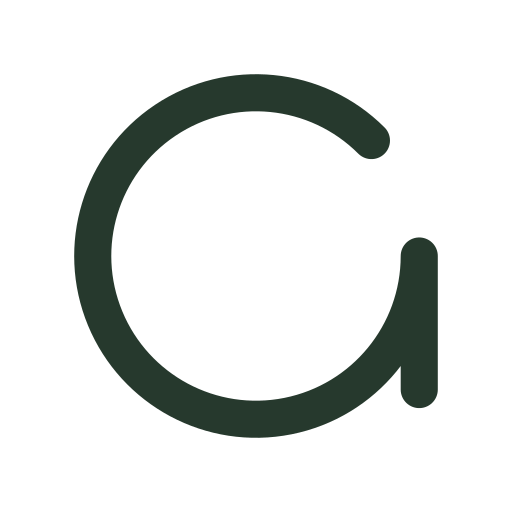
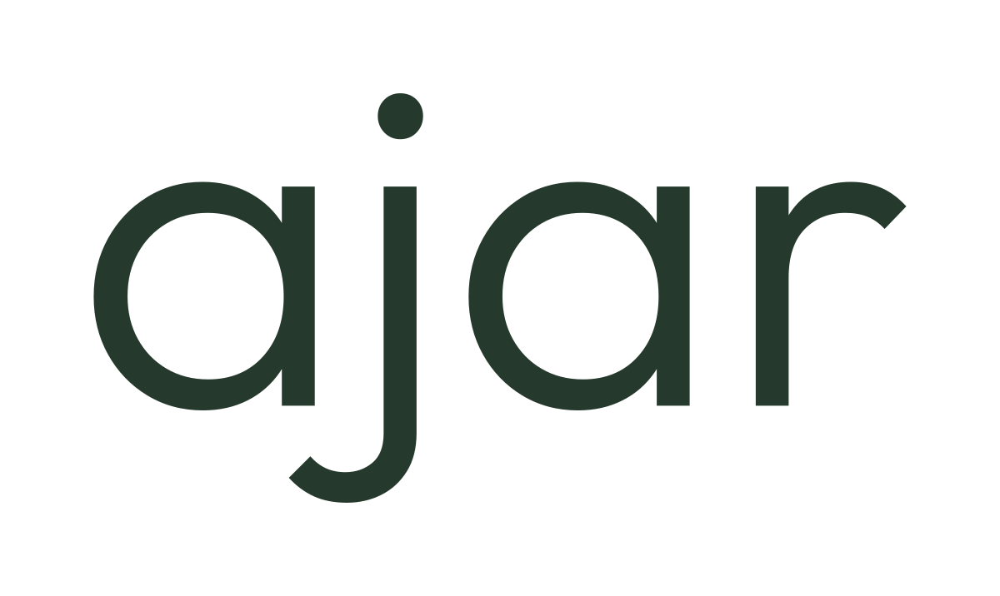
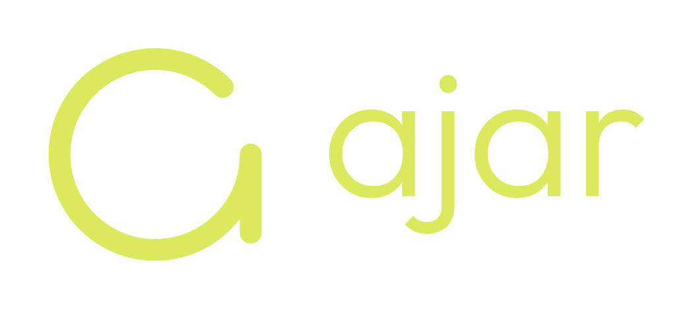
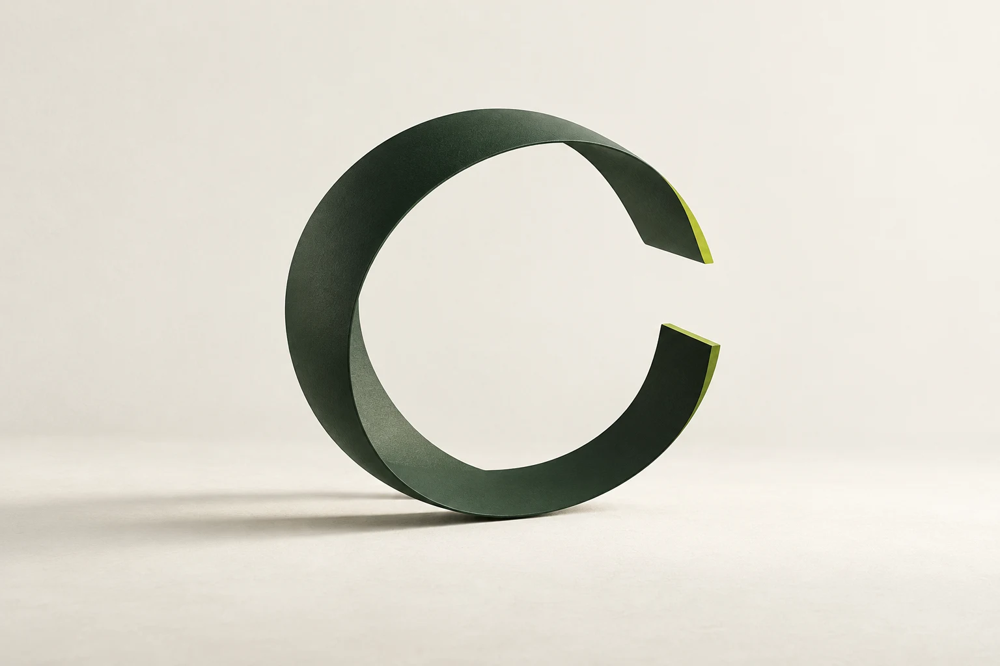
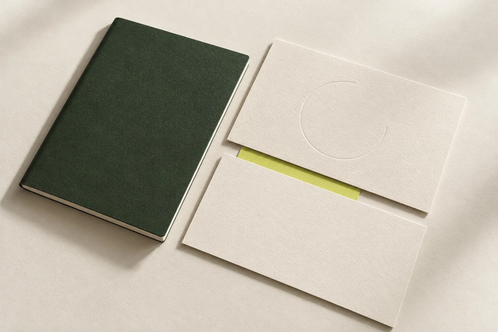
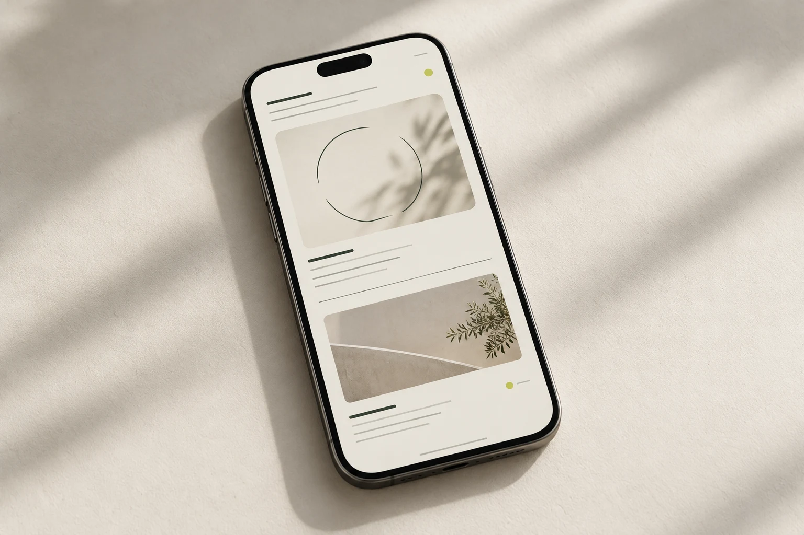

언제든
열려 있는
열려 있는 상태 자체를 정체성으로 삼습니다.
현재의 형태를 가지면서도 새로운 생각과
다음 변화가 들어올 여지를 남깁니다.
또렷한 형태에
작은 열림을 남깁니다.
정원균형 잡힌 원형 몸통
한 획끊김 없이 이어지는 선
열린 틈다음이 들어올 여지
기준 심볼은 C1입니다. 둥근 끝과 짧게 보정한 오른쪽 세로획을 유지합니다.
이름은 가볍고 명료하게.

Outfit Light굵기 300
전체 이름a · j · a · r 모두 같은 서체
기본 커닝추가 자간 0
C1은 독립 심볼이며 이름의 첫 글자를 대신하지 않습니다. 제공 SVG는 폰트 설치 없이 사용할 수 있습니다.
심볼이 중심을 잡고,
이름은 자연스럽게 따릅니다.

0.75H심볼 대비 이름 전체 높이
0.32H두 요소 사이 간격
300워드마크 굵기
H는 심볼의 보이는 높이입니다. 이름은 j의 점과 아래 부분까지 포함한 윤곽을 기준으로 중심을 맞췄습니다.
이전 조합과 비례 비교 ↗열려 있는 상태 자체.
‘언제든’은 그 태도가 지속된다는 뜻입니다. 시작할 때도, 진행하는 동안에도, 마무리한 뒤에도 다시 생각하고 이어갈 수 있습니다.
‘열려 있는’은 방향과 가능성을 미리 한정하지 않는다는 뜻입니다. 무엇에 열려 있는지는 AJAR가 만들어가는 일과 관계를 통해 채워집니다.
생각의 여지
새로운 관점이 더해지고 기존 판단이 달라질 수 있습니다.
형태의 유연함
각 프로젝트는 목적에 맞는 자기 모습을 가질 수 있습니다.
이어갈 가능성
멈추거나 끝낸 일에도 다음 시작의 여지를 남깁니다.
작은 실험과 학습 기록은 이 정체성을 실천하는 방식입니다.
차분한 바탕에 작은 생기.
#F2F0E8
배경과 여백
#26392D
심볼과 글자
#DBEA5C
작은 강조
라임은 강조가 필요한 지점에 작게 사용합니다. 녹색 바탕에서는 라임이나 흰색 로고를 씁니다.
한 가지 이름, 일정한 무게.
워드마크와 큰 영문 제목은 Light 300, 본문과 작은 정보는 Regular 400으로 읽기 편하게 정리합니다. 한글 본문은 시스템 산세리프를 사용합니다.
내용 사이에도 여지를.
얇은 구분선과 넓은 간격으로 정보의 순서를 만듭니다. 제목과 설명의 크기 차이를 유지하고 라벨은 작고 담백하게 둡니다.
보호 여백
로고 윤곽에서 선 굵기 두 배 이상의 여백을 확보합니다. 비율·선 굵기·열린 각도를 개별적으로 바꾸지 않습니다.
디지털 최소 크기
심볼 24px, 워드마크 120px, 가로 조합 200px부터 사용합니다. 더 작은 영역에는 독립 심볼을 사용합니다.
색과 배경이 충분히 대비되게 사용하고, 기본 로고에 그림자·외곽선·그라데이션을 추가하지 않습니다.

작은 화면에서도
또렷하게 열려 있도록.
iOS용 AppIcon과 앱 내부 template 심볼, Android adaptive·단색·알림 리소스, 웹 SVG·ICO·PNG·터치 아이콘을 준비했습니다. 원본은 정사각형이며 모서리는 플랫폼에서 처리합니다.


16·32px 파비콘은 작은 크기에 맞춰 선을 보정했습니다. 앱·로고 원형은 C1을 유지합니다.
열려 있음을
다양한 장면으로.
브랜드 팔레트와 열린 윤곽, 여백을 그래픽·실물·화면에 적용하는 디자인 아이디어입니다.


열린 윤곽
포스터와 브랜드 이미지에 활용할 수 있는 입체감, 여백과 작은 강조색.
원본 PNG ↓

종이와 틈
재질과 겹침, 사이의 간격으로 이어지는 색과 형태.
원본 PNG ↓

모바일의 여백
가벼운 정보 위계와 넓은 간격으로 구성한 모바일 비주얼.
원본 PNG ↓탐색용 콘셉트 이미지입니다. 실제 제작된 제품이나 구현된 앱 화면을 뜻하지 않습니다. 이미지 속 추상 형태는 보조 그래픽이며 공식 표기는 C1 로고 원본을 사용합니다.
일관되게 사용할 수 있도록.
심볼·전체 워드마크·가로 조합의 녹색·라임·흑백 SVG와 PNG, Outfit 원본과 라이선스, 컬러 토큰과 상세 가이드를 담았습니다.


전용 한글 서체·인쇄 색상·16px 전용 심볼 보정은 후속 작업으로 남겨둡니다.